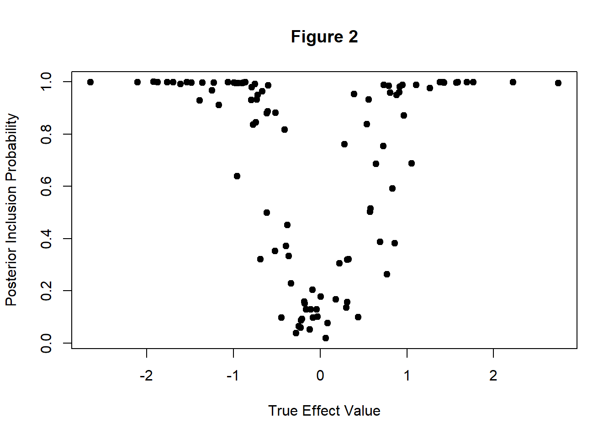
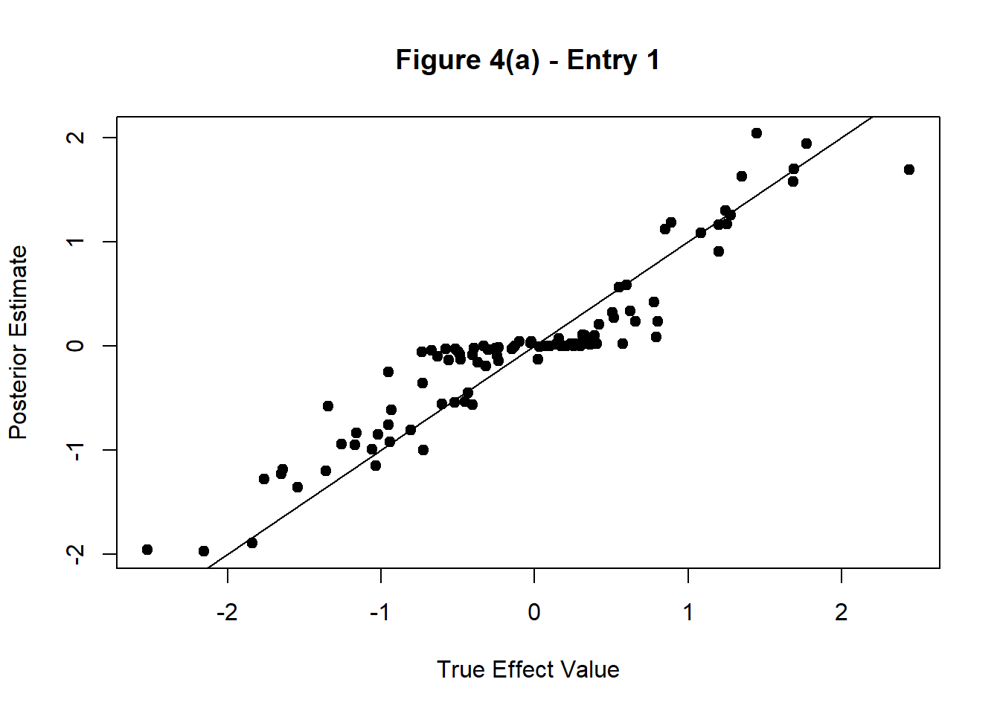
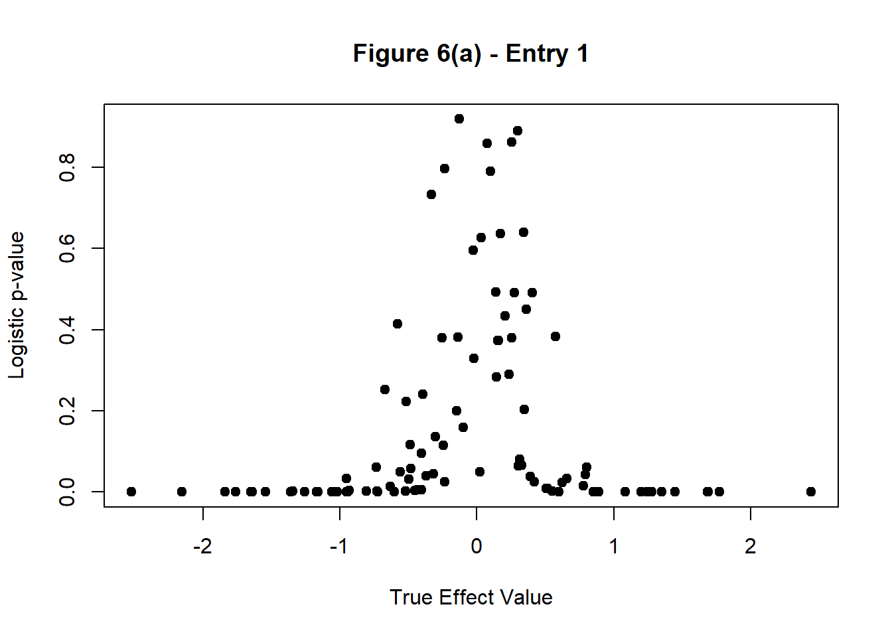
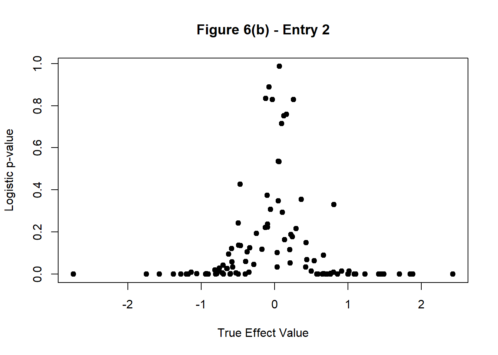
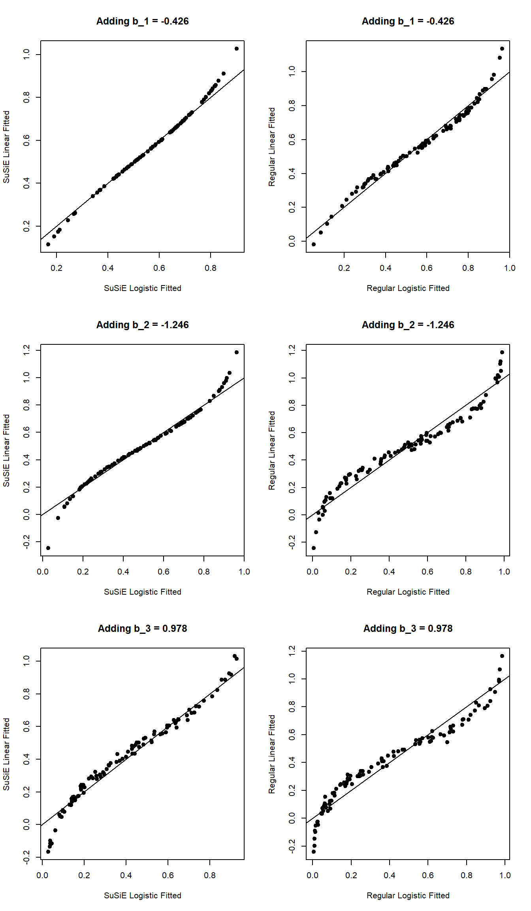
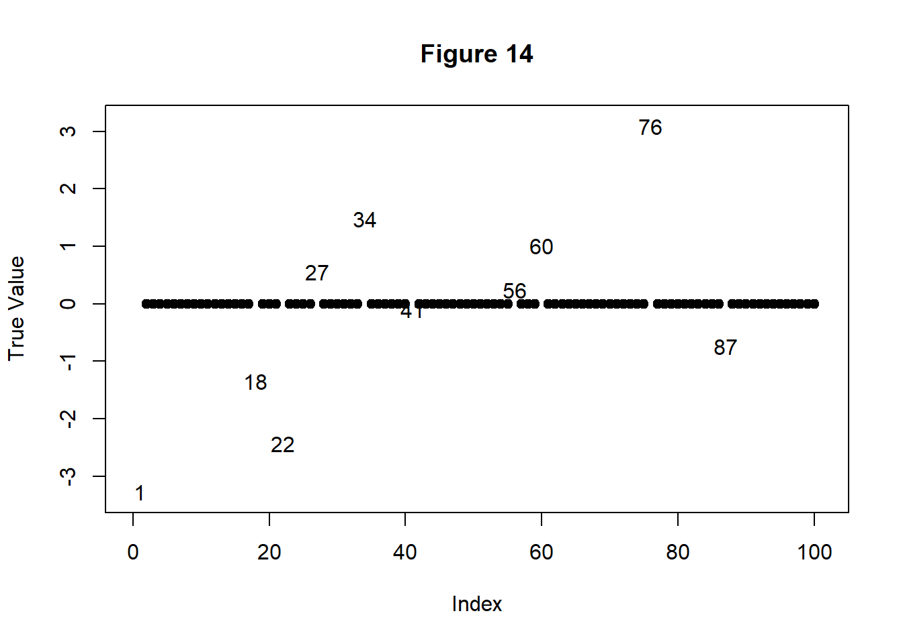

susieR Logistic Regression GLM
Andrew Goldstein
December 3, 2018
Last updated: 2018-12-08
workflowr checks: (Click a bullet for more information)-
✔ R Markdown file: up-to-date
Great! Since the R Markdown file has been committed to the Git repository, you know the exact version of the code that produced these results.
-
✔ Environment: empty
Great job! The global environment was empty. Objects defined in the global environment can affect the analysis in your R Markdown file in unknown ways. For reproduciblity it’s best to always run the code in an empty environment.
-
✔ Seed:
set.seed(20181203)The command
set.seed(20181203)was run prior to running the code in the R Markdown file. Setting a seed ensures that any results that rely on randomness, e.g. subsampling or permutations, are reproducible. -
✔ Session information: recorded
Great job! Recording the operating system, R version, and package versions is critical for reproducibility.
-
Great! You are using Git for version control. Tracking code development and connecting the code version to the results is critical for reproducibility. The version displayed above was the version of the Git repository at the time these results were generated.✔ Repository version: 1410600
Note that you need to be careful to ensure that all relevant files for the analysis have been committed to Git prior to generating the results (you can usewflow_publishorwflow_git_commit). workflowr only checks the R Markdown file, but you know if there are other scripts or data files that it depends on. Below is the status of the Git repository when the results were generated:
Note that any generated files, e.g. HTML, png, CSS, etc., are not included in this status report because it is ok for generated content to have uncommitted changes.Ignored files: Ignored: .Rhistory Ignored: analysis/susie_logistic_demonstration_cache/
Expand here to see past versions:
| File | Version | Author | Date | Message |
|---|---|---|---|---|
| Rmd | 1410600 | Andrew Goldstein | 2018-12-08 | Adding comparison w/ regular SuSiE |
| html | 11114f5 | Andrew Goldstein | 2018-12-08 | Build site. |
| Rmd | 4252613 | Andrew Goldstein | 2018-12-08 | Fixing X in easy simulations to have variance 1 and be independent (not orthonormal), fixing bug in while loop, updating |
| html | 1aa0092 | Andrew Goldstein | 2018-12-07 | Build site. |
| Rmd | 8ce1cac | Andrew Goldstein | 2018-12-07 | Some minor formatting changes |
| html | baca7a3 | Andrew Goldstein | 2018-12-07 | Build site. |
| Rmd | 3f0a7c1 | Andrew Goldstein | 2018-12-07 | Adding note that same phase change happens w/ regular SuSiE |
| html | c4bcd3a | Andrew Goldstein | 2018-12-06 | Build site. |
| Rmd | 11b9373 | Andrew Goldstein | 2018-12-06 | Fixing figure numbering |
| html | 23eac4f | Andrew Goldstein | 2018-12-06 | Build site. |
| Rmd | eaeef13 | Andrew Goldstein | 2018-12-06 | Add second simple example with L = 2 |
| html | e617aaa | Andrew Goldstein | 2018-12-06 | Build site. |
| Rmd | 22993c6 | Andrew Goldstein | 2018-12-06 | Update intercept estimation, and add simpler example |
| html | 5f4bc45 | Andrew Goldstein | 2018-12-06 | Build site. |
| Rmd | 4cb3489 | Andrew Goldstein | 2018-12-06 | Update intercept estimation, and add simpler example |
| html | 8ff7107 | Andrew Goldstein | 2018-12-04 | Build site. |
| Rmd | c40eeff | Andrew Goldstein | 2018-12-04 | Re-running to fix figures |
| html | 939555f | Andrew Goldstein | 2018-12-04 | Build site. |
| Rmd | e0c6faf | Andrew Goldstein | 2018-12-04 | Re-running to fix figures |
| html | c82fc0f | Andrew Goldstein | 2018-12-04 | Build site. |
| html | a82ffad | Andrew Goldstein | 2018-12-04 | Build site. |
| html | 366c1b3 | Andrew Goldstein | 2018-12-04 | Build site. |
| html | 481510b | Andrew Goldstein | 2018-12-04 | Build site. |
| Rmd | f4f10e9 | Andrew Goldstein | 2018-12-04 | Add signal level test with genotype-style data (X_ij = 0, 1, 2) |
| html | a96c6bb | Andrew Goldstein | 2018-12-04 | Build site. |
| Rmd | e5e14da | Andrew Goldstein | 2018-12-04 | Increase sample size n := 1000 for signal level tests |
| html | ea80ce2 | Andrew Goldstein | 2018-12-04 | Build site. |
| Rmd | 7e724cc | Andrew Goldstein | 2018-12-04 | Specify size of the problem for signal size exploration |
| html | 378e04e | Andrew Goldstein | 2018-12-04 | Build site. |
| Rmd | 88a7560 | Andrew Goldstein | 2018-12-04 | Updated to add a test at different noise levels, and add a blurb about fitting the intercept |
| html | 5ae2c6c | Andrew Goldstein | 2018-12-04 | Build site. |
| Rmd | 2364416 | Andrew Goldstein | 2018-12-04 | Updating to add intercept estimation, and more efficiently calculate the fixed portion for each SER |
| html | 41527d2 | Andrew Goldstein | 2018-12-03 | Build site. |
| Rmd | d42fc1c | Andrew Goldstein | 2018-12-03 | Making plots bigger, and cache slow-running code |
| html | b5ab5f4 | Andrew Goldstein | 2018-12-03 | Build site. |
| Rmd | a60317c | Andrew Goldstein | 2018-12-03 | Adding hard example |
| html | 60b24de | Andrew Goldstein | 2018-12-03 | Build site. |
| Rmd | b7e6c6b | Andrew Goldstein | 2018-12-03 | Change knitr results option to default (markup) |
| html | ba6830a | Andrew Goldstein | 2018-12-03 | Build site. |
| Rmd | 49a07a4 | Andrew Goldstein | 2018-12-03 | Adding logistic demonstration |
Introduction
This page aims to explore an analog to SuSiE applied to 0/1 data using logistic regression. The basic idea is to replace the Single Effect Regression (SER) step in the Iterative Bayesian Forward Selection (IBFS) algorithm with an analogous logistic regression step.
Our response is \(\mathbf{y} \in \mathbb{R}^n\), and our covariates are \(\mathbf{X} \in \mathbb{R}^{n \times p}\).
SER Model
In the standard SuSiE model, the following SER regression model is used: \[ \begin{aligned} \mathbf{y} = \mathbf{Xb} + \mathbf{e} \\ \mathbf{e} \sim \mathcal{N}(0, \sigma^2 I_n) \\ \mathbf{b} = \mathbf{\gamma}b \\ \mathbf{\gamma} \sim \text{Mult}(1, \mathbf{\pi}) \\ b \sim \mathcal{N}(0, \sigma_0^2) \end{aligned} \]
From this model, the standard OLS estimates (also the MLE) for \(b_j\) is found using \(p\) independent simple linear regressions (fit without an intercept), \(\hat{b_j}(\mathbf{y}, \mathbf{x_j}) = (\mathbf{x_j^Tx_j})^{-1}\mathbf{x_j^Ty}\), with variance \(\sigma_{MLE_j}^2 = \sigma^2 (\mathbf{x_j^Tx_j})^{-1}\). The posterior distribution for \(b_j\) given \(\gamma_j = 1\) is then \[ \begin{aligned} b|\gamma_j = 1, \mathbf{y}, \sigma^2, \sigma_0^2 \sim \mathcal{N}(\mu_{1j}, \sigma_{1j}^2) \\ \sigma_{1j}^2 = \frac{1}{1 / \sigma_{MLE_j}^2 + 1 / \sigma_0^2} \\ \mu_{1j} = \frac{1 / \sigma_{MLE_j}^2}{1 / \sigma_{MLE_j}^2 + 1 / \sigma_0^2} \hat{b_j}(\mathbf{y}, \mathbf{x_j}) + \frac{1 / \sigma_0^2}{1 / \sigma_{MLE_j}^2 + 1 / \sigma_0^2} 0 = \frac{\sigma_{1j}^2}{\sigma_{MLE_j}^2} \hat{b_j}(\mathbf{y}, \mathbf{x_j}) \end{aligned} \]
The Bayes Factor is then calculated as \[ \frac{p(\hat{b_j}(\mathbf{y}, \mathbf{x_j}) | b_j \sim \mathcal{N}(0, \sigma_0^2))}{p(\hat{b_j}(\mathbf{y}, \mathbf{x_j}) | b_j = 0)} \]
Since \(\hat{b_j}(\mathbf{y}, \mathbf{x_j}) \sim \mathcal{N}(b_j, \sigma_{MLE_j}^2) = b_j + \mathcal{N}(0, \sigma_{MLE_j}^2)\), we have that \[ \begin{aligned} \hat{b_j}(\mathbf{y}, \mathbf{x_j}) \sim_{M_{1j}} \mathcal{N}(0, \sigma_0^2 + \sigma_{MLE_j}^2) \\ \hat{b_j}(\mathbf{y}, \mathbf{x_j}) \sim_{M_{0_j}} \mathcal{N}(0, \sigma_{MLE_j}^2) \\ \end{aligned} \] where \(M_{1j}\) is the specified model where \(b_j\) is the non-zero element, and \(M_{0j}\) is the null model (i.e. the model in which \(b_j = 0\)). From this, we see that the Bayes Factor is simply a ratio of normal densities.
Then, we calculate the vector of PIPs \(\alpha\) as: \[ \alpha_j = \frac{\text{BF}(\mathbf{y}, \mathbf{x_j}; \sigma^2, \sigma_0^2) \pi_j}{\sum_{k = 1}^p \text{BF}(\mathbf{y}, \mathbf{x_k}; \sigma^2, \sigma_0^2) \pi_k} \]
Here, the following adjusted model is considered: \[ \begin{aligned} \mathbf{y} \sim \text{Bern}\Bigg(\frac{e^\mathbf{Xb}}{1 + e^{\mathbf{Xb}}}\Bigg) \quad \text{(element-wise)} \\ \mathbf{b} = \gamma b \\ \mathbf{\gamma} \sim \text{Mult}(1, \mathbf{\pi}) \\ b \sim \mathcal{N}(0, \sigma_0^2) \end{aligned} \]
From here, instead of computing the closed-form solution for \(\hat{b_j}(\mathbf{y}, \mathbf{x_j})\), we perform a logistic regression with R’s glm function in order to calculate \(\hat{b_j}(\mathbf{y}, \mathbf{x_j})\) and \(\sigma_{MLE_j}^2\) for each of the \(p\) single-variable logistic regressions (fit without an intercept).
The rest follows as outlined above for the regular SER model.
Full Model
The full SuSiE model is as follows: \[ \begin{aligned} \mathbf{y} = \mathbf{Xb} + \mathbf{e} \\ \mathbf{e} \sim \mathcal{N}(0, \sigma^2 I_n) \\ \mathbf{b} = \sum_{l = 1}^L \mathbf{b}_l \\ \mathbf{b}_l = \gamma_l b_l \quad (\text{independently for } l = 1, \dots, L) \\ \gamma_l \sim \text{Mult}(1, \mathbf{\pi}) \\ b_l \sim \mathcal{N}(0, \sigma_{0l}^2) \end{aligned} \]
The IBFS algorithm is then applied. In this algorithm, we iterate over \(l \in \{1, \dots, L\}\) and perform our SER step on the residuals, \(\mathbf{r_l} \equiv \mathbf{y} - \sum_{l' \ne l} \mathbf{X\bar{b}}_{l'}\), to get the vectors \(\alpha_l, \mu_{1l}, \sigma_{1l}\). We then set \(\mathbf{\bar{b}}_l := \alpha_l \circ \mu_{1l}\) (Schur product).
Here, the following adjusted model is considered: \[ \begin{aligned} \mathbf{y} \sim \text{Bern}\Bigg(\frac{e^\mathbf{Xb}}{1 + e^{\mathbf{Xb}}}\Bigg) \quad \text{(element-wise)} \\ \mathbf{b} = \sum_{l = 1}^L \mathbf{b}_l \\ \mathbf{b}_l = \gamma_l b_l \quad (\text{independently for } l = 1, \dots, L) \\ \gamma_l \sim \text{Mult}(1, \mathbf{\pi}) \\ b_l \sim \mathcal{N}(0, \sigma_{0l}^2) \end{aligned} \]
We modify the IBFS algorithm to use the analogs from this model. The main difference is that we can no longer perform SER on the residuals, since the residuals don’t really make sense in the logistic setting.
However, noting that the following regressions are equivalent (where \(\sim\) is interpreted as the regression formula, as in lm or glm), we have motivation for altering the IBFS algorithm: \[
\mathbf{r}_l \sim \mathbf{Xb}_l \iff \mathbf{y} - \sum_{l' \ne l} \mathbf{X\bar{b}}_{l'} \sim \mathbf{Xb}_l \iff \mathbf{y} \sim \mathbf{Xb}_l + \text{offset}(\sum_{l' \ne l} \mathbf{X\bar{b}}_{l'})
\] Here, offset is the function in R that forces the coefficient for the predictor to be 1.
Thus, in our modified logistic version, when fitting the SER each iteration, we can simply fit:
glm(Y ~ X[, j] + offset(fixed), family = "binomial")separately for each \(j \in \{1, \dots, p\}\), where fixed is \(\sum_{l' \ne l} \mathbf{X\bar{b}}_{l'}\).
A Note on the Intercept
In regular SuSiE, we can center our covariates and response to avoid fitting the intercept. Since our data is now 0/1, we can no longer center our response. Instead, we can fit an intercept in our IBFS.
However, we note that centering X and Y at the start of the procedure and not fitting an intercept in each SER is equivalent to not centering X and Y and fitting an intercept in each SER step. As a result, in the logistic case, we do fit an intercept in each logistic SER.
Adjustments to SuSiE Code
The code below is a simplistic implementation of the above ideas.
(Note: Not all code is needed, some vestigial components from a copy-paste job from susieR)
### NOTE: This is basic code, and I did not attempt to mirror the level of numerical sophistication in the susie functions
### If this idea is worth pursuing further, then this code can be improved
susie_logistic = function(Y, X, L = 10, V = 1, prior_weights = NULL, tol = 1e-3, maxit = 1000, intercept = TRUE) {
p = ncol(X)
n = nrow(X)
# place to store posterior info for each l = 1, ..., L
post_alpha = matrix(NA, nrow = p, ncol = L)
post_mu = matrix(NA, nrow = p, ncol = L)
post_sigma = matrix(NA, nrow = p, ncol = L)
post_info = list(post_alpha = post_alpha, post_mu = post_mu, post_sigma = post_sigma)
beta_post_init = matrix(Inf, nrow = p, ncol = L) # initialize
beta_post_init2 = beta_post_init
beta_post = matrix(0, nrow = p, ncol = L)
fixed = rep(0, n) # fixed portion, estimated from l' != l other SER models
iter = 0
while((norm(beta_post - beta_post_init, "1") > tol) & (norm(beta_post - beta_post_init2, "1") > tol)) { # repeat until posterior means converge (ELBO not calculated here, so use this convergence criterion instead)
beta_post_init2 = beta_post_init # store from 2 iterations ago
beta_post_init = beta_post
for (l in 1:L) {
# below is old (inefficient) calculation of the fixed portion
#fixed = rowSums(X %*% beta_post[, -l]) + int.coef # fixed portion from previous estimates (add intercept portion as well)
fixed = fixed - (X %*% beta_post[, l]) # remove effect from previous iteration
SER_logistric_l = single_effect_regression_logistic(Y, X, V, prior_weights, FALSE, fixed, intercept)
# store
post_info$post_alpha[, l] = SER_logistric_l$alpha
post_info$post_mu[, l] = SER_logistric_l$mu
post_info$post_sigma[, l] = SER_logistric_l$mu2 - SER_logistric_l$mu^2
# update beta_post
beta_post[, l] = SER_logistric_l$alpha * SER_logistric_l$mu
fixed = fixed + (X %*% beta_post[, l]) # add back new fixed portion
}
iter = iter + 1
if (iter > maxit) {
stop("Maximum number of iterations reached")
}
}
return(post_info)
}
# SER_logistic function
single_effect_regression_logistic = function(Y, X, V, prior_weights = NULL, optimize_V = FALSE, fixed = NULL, intercept = TRUE) {
p = ncol(X)
betahat = numeric(p)
shat2 = numeric(p)
if (is.null(fixed)) { # fixed is components from previous SER fits
fixed = rep(0, length(Y))
}
# NOTE: could parallelize loop below if desired
for (j in 1:p) { # logistic regression on each column of X separately
if (intercept) {
log.fit = glm(Y ~ X[, j] + 1 + offset(fixed), family = "binomial") # fit w/ intercept
} else {
log.fit = glm(Y ~ X[, j] - 1 + offset(fixed), family = "binomial") # fit w/out intercept
}
log.fit.coef = summary(log.fit)$coefficients
# NOTE: coerces "intercept" to be 0 or 1 to grab relevant row of glm coefficient output
betahat[j] = ifelse(is.na(log.fit.coef[1 + intercept, 1]), 0, log.fit.coef[1 + intercept, 1]) # beta-hat MLE (if na, just set to 0)
shat2[j] = ifelse(is.na(log.fit.coef[1 + intercept, 2]), Inf, log.fit.coef[1 + intercept, 2]^2) # (std errof beta-hat MLE)^2 (if na, just set to Inf)
}
if (is.null(prior_weights)) {
prior_weights = rep(1 / p, p)
}
if(optimize_V) {
stop("Optimizing for prior variance not yet implemented for logistic case")
#if(loglik.grad(0, betahat, shat2, prior_weights) < 0) {
# V = 0
#} else {
##V.o = optim(par=log(V),fn=negloglik.logscale,gr = negloglik.grad.logscale,betahat=betahat,shat2=shat2,prior_weights=prior_weights,method="BFGS")
##if(V.o$convergence!=0){
## warning("optimization over prior variance failed to converge")
##}
# V.u = uniroot(negloglik.grad.logscale, c(-10, 10), extendInt = "upX", betahat = betahat, shat2 = shat2, prior_weights = prior_weights)
# V = exp(V.u$root)
#}
}
lbf = dnorm(betahat, 0, sqrt(V + shat2), log = TRUE) - dnorm(betahat, 0, sqrt(shat2), log = TRUE)
#log(bf) on each SNP
lbf[is.infinite(shat2)] = 0 # deal with special case of infinite shat2 (eg happens if X does not vary)
maxlbf = max(lbf)
w = exp(lbf - maxlbf) # w is proportional to BF, but subtract max for numerical stability
# posterior prob on each SNP
w_weighted = w * prior_weights
weighted_sum_w = sum(w_weighted)
alpha = w_weighted / weighted_sum_w
post_var = 1 / ((1 / shat2) + (1 / V)) # posterior variance
post_mean = (1 / shat2) * post_var * betahat # posterior mean
post_mean2 = post_var + post_mean^2 # posterior second moment
# BF for single effect model
lbf_model = maxlbf + log(weighted_sum_w)
# NOTE: Need to double check below
loglik = lbf_model + log(1/2)*length(Y) # loglik of 0/1 response Y under p = .5
return(list(alpha = alpha, mu = post_mean, mu2 = post_mean2, lbf = lbf, lbf_model = lbf_model, V = V, loglik = loglik))
}Demonstration
Easy Demonstration
L = 1
As a very easy demonstration, let \(n = 100, p = 10, L = 1\), and let all columns of \(X\) be distributed \(\mathcal{N}(0, 1)\). WLOG, we let the first element of \(\mathbf{b}\) be the only non-zero element. We set \(\sigma_0^2 = 1\).
We then simulated \(\mathbf{y}\) from the specified bernoulli model, \[ y_i \stackrel{\perp}{\sim} \text{Bern}\Bigg(\frac{e^{(\mathbf{Xb})_i}}{1 + e^{(\mathbf{Xb})_i}}\Bigg) \] (We do not add an intercept term here, but still fit the model with an intercept).
We repeat this procedure 100 times.
set.seed(1138)
n = 100
p = 10
L = 1
V = 1
beta_true = rep(0, p)
B = 100
b_1s = numeric(B)
susie.fits.easy = list() # logistic SuSiE fits
logistic.fits.easy = list() # logistic regression fits
for (i in 1:B) {
beta_true[1] = rnorm(1, 0, sqrt(V))
b_1s[i] = beta_true[1]
# make independent N(0, 1) covariates
X = matrix(rnorm(n * p), nrow = n)
# make response
Y = rbinom(n, 1, exp(X %*% beta_true) / (1 + exp(X %*% beta_true)))
susie.fits.easy[[i]] = susie_logistic(Y, X, L, V)
logistic.fits.easy[[i]] = glm(Y ~ X, family = "binomial")
}Figure 1 below plots the estimated value for \(\hat{b}_1 := \mu_1 \cdot \alpha_1\) against the true value, where \(\mu_1\) is the estimated posterior mean, and \(\alpha_1\) is the estimated posterior inclusion probability. Figure 2 below plots the PIP, \(\alpha_i\), against the true value of \(b_1\).
plot(sapply(susie.fits.easy, function(x) x$post_alpha[1] * x$post_mu[1]) ~ b_1s, xlab = "True Effect Value", ylab = "Posterior Estimate", main = "Figure 1", pch = 19)
abline(0, 1)
Expand here to see past versions of unnamed-chunk-3-1.png:
| Version | Author | Date |
|---|---|---|
| 11114f5 | Andrew Goldstein | 2018-12-08 |
| 5f4bc45 | Andrew Goldstein | 2018-12-06 |
| ba6830a | Andrew Goldstein | 2018-12-03 |
plot(sapply(susie.fits.easy, function(x) x$post_alpha[1]) ~ b_1s, xlab = "True Effect Value", ylab = "Posterior Inclusion Probability", main = "Figure 2", pch = 19)
Expand here to see past versions of unnamed-chunk-3-2.png:
| Version | Author | Date |
|---|---|---|
| 11114f5 | Andrew Goldstein | 2018-12-08 |
| 5f4bc45 | Andrew Goldstein | 2018-12-06 |
Figure 1 shows that, in this simulation, we observe a shrinkage behavior similar to hard-thresholding (with a small thresholding value). We also see that our estimated lie pretty close to the truth. Figure 2 shows a sharp transition between a very low PIP and a PIP near 1. This sharp transition is what causes the hard-thresholding-like shrinkage we obsersve in figure 1: the posterior mean values \(\mu_1\) closely match the true values for \(b_1\), but are effectively shrunk to 0 in this region by the PIP \(\alpha_i\), and are effectively untouched outside this region.
We can compare figure 2 with the p-values obtained from the normal logistic regressions on the same simulated data, shown in figure 3 below.
plot(sapply(logistic.fits.easy, function(x) summary(x)$coefficients[2, 4]) ~ b_1s, xlab = "True Effect Value", ylab = "Logistic p-value", main = "Figure 3", pch = 19)
Expand here to see past versions of unnamed-chunk-4-1.png:
| Version | Author | Date |
|---|---|---|
| 11114f5 | Andrew Goldstein | 2018-12-08 |
| 5f4bc45 | Andrew Goldstein | 2018-12-06 |
| 5ae2c6c | Andrew Goldstein | 2018-12-04 |
| ba6830a | Andrew Goldstein | 2018-12-03 |
We see a similar phase transition around the same values of the true effect size, \(|b_1| \le 0.5\).
CAUTION: Cycling Behavior
I have come across a situation in which the iterative algorithm gets caught in a loop, where it cycles between 2 estimates for the coefficients.
set.seed(1138)
n = 100
p = 10
L = 2
V = 9
beta_true = rep(0, p)
# make independent N(0, 1) covariates
X = matrix(rnorm(n * p), nrow = n)
beta_true[1] = rnorm(1, 0, sqrt(V))
beta_true[2] = rnorm(1, 0, sqrt(V))
Y = rbinom(n, 1, exp(X %*% beta_true) / (1 + exp(X %*% beta_true)))
susie.cycle = susie_logistic(Y, X, L, V)I have gotten around this with a more sophisticated convergence criterion (e.g. also store and compare with the estimate 2 iterations ago). However, this situation may be a cause for concern.
CAUTION: More than cycling behavior
I have also come across a situation with erratic behavior. The 7th iteration leads to crazy behavior that doesn’t converge.
set.seed(1138)
n = 100
p = 10
L = 2
V = 9
beta_true = rep(0, p)
# make independent N(0, 1) covariates
X = matrix(rnorm(n * p), nrow = n)
B = 7
b_1s = numeric(B)
b_2s = numeric(B)
#susie.fits.easy2 = list() # logistic SuSiE fits
#logistic.fits.easy2 = list() # logistic regression fits
for (i in 1:B) {
beta_true[1] = rnorm(1, 0, sqrt(V))
beta_true[2] = rnorm(1, 0, sqrt(V))
b_1s[i] = beta_true[1]
b_2s[i] = beta_true[2]
Y = rbinom(n, 1, exp(X %*% beta_true) / (1 + exp(X %*% beta_true)))
#susie.fits.easy2[[i]] = susie_logistic(Y, X, L, V)
#logistic.fits.easy2[[i]] = glm(Y ~ X, family = "binomial")
}Increasing the maximum number of iterations sometimes solves the issue, so perhaps it’s just that convergence is slow.
Another fix is setting \(\sigma_0^2\) to be smaller. There appears to be an issue when the effect size is too large (caused by separability in the data, so our SEs are huge for our estimates
L = 2
We not repeat the same as above, except with \(L = 2, \sigma_0^2 = 1\), and the second element \(b_2\) also a non-zero.
set.seed(1138)
n = 100
p = 10
L = 2
V = 1
beta_true = rep(0, p)
B = 100
b_1s = numeric(B)
b_2s = numeric(B)
susie.fits.easy2 = list() # logistic SuSiE fits
logistic.fits.easy2 = list() # logistic regression fits
for (i in 1:B) {
beta_true[1] = rnorm(1, 0, sqrt(V))
beta_true[2] = rnorm(1, 0, sqrt(V))
b_1s[i] = beta_true[1]
b_2s[i] = beta_true[2]
# make independent N(0, 1) covariates
X = matrix(rnorm(n * p), nrow = n)
# make response
Y = rbinom(n, 1, exp(X %*% beta_true) / (1 + exp(X %*% beta_true)))
susie.fits.easy2[[i]] = susie_logistic(Y, X, L, V, maxit = 1000)
logistic.fits.easy2[[i]] = glm(Y ~ X, family = "binomial")
}Figures 4(a-b) below plot the estimated value for \(\hat{b}_1 := \sum_{l = 1}^2 \mu_{l,1} \cdot \alpha_{l,1}\) and \(\hat{b}_2 := \sum_{l = 1}^2 \mu_{l,2} \cdot \alpha_{l,2}\) against the true value, where \(\mu_{l,i}\) is the estimated posterior mean, and \(\alpha_{l,i}\) is the estimated posterior inclusion probability, for entry \(i\) in estimated vector \(l\). Figures 5(a-b) below plot the maximum PIP, \(\max_{l \in \{1, 2\}}\alpha_{l,i}\), against the true value of \(b_i\).
#est_b1_max = sapply(susie.fits.easy2, function(x) x$post_alpha[1, which.max(x$post_alpha[1, ]) ]* x$post_mu[1, which.max(x$post_alpha[1, ])])
#est_b2_max = sapply(susie.fits.easy2, function(x) x$post_alpha[2, which.max(x$post_alpha[2, ]) ]* x$post_mu[2, which.max(x$post_alpha[2, ])])
est_alpha1_max = sapply(susie.fits.easy2, function(x) max(x$post_alpha[1, ]))
est_alpha2_max = sapply(susie.fits.easy2, function(x) max(x$post_alpha[2, ]))
est_b = sapply(susie.fits.easy2, function(x) rowSums(x$post_alpha * x$post_mu))
plot(est_b[1, ] ~ b_1s, xlab = "True Effect Value", ylab = "Posterior Estimate", main = "Figure 4(a) - Entry 1", pch = 19)
abline(0, 1)
Expand here to see past versions of unnamed-chunk-8-1.png:
| Version | Author | Date |
|---|---|---|
| 11114f5 | Andrew Goldstein | 2018-12-08 |
| 5f4bc45 | Andrew Goldstein | 2018-12-06 |
| 5ae2c6c | Andrew Goldstein | 2018-12-04 |
| b5ab5f4 | Andrew Goldstein | 2018-12-03 |
plot(est_b[2, ] ~ b_2s, xlab = "True Effect Value", ylab = "Posterior Estimate", main = "Figure 4(b) - Entry 2", pch = 19)
abline(0, 1)Expand here to see past versions of unnamed-chunk-8-2.png:
| Version | Author | Date |
|---|---|---|
| 11114f5 | Andrew Goldstein | 2018-12-08 |
| 5f4bc45 | Andrew Goldstein | 2018-12-06 |
plot(est_alpha1_max ~ b_1s, xlab = "True Effect Value", ylab = "Posterior Inclusion Probability", main = "Figure 5(a) - Entry 1", pch = 19)
Expand here to see past versions of unnamed-chunk-8-3.png:
| Version | Author | Date |
|---|---|---|
| 11114f5 | Andrew Goldstein | 2018-12-08 |
| 5f4bc45 | Andrew Goldstein | 2018-12-06 |
plot(est_alpha2_max ~ b_2s, xlab = "True Effect Value", ylab = "Posterior Inclusion Probability", main = "Figure 5(b) - Entry 2", pch = 19)Expand here to see past versions of unnamed-chunk-8-4.png:
| Version | Author | Date |
|---|---|---|
| 11114f5 | Andrew Goldstein | 2018-12-08 |
We see a similar pattern as above, in the case \(L = 1\). The method is also able to detect both effects (when strong enough).
We can compare figures 5(a-b) with the p-values obtained from the normal logistic regressions on the same simulated data, shown in figures 6(a-b) below.
plot(sapply(logistic.fits.easy2, function(x) summary(x)$coefficients[2, 4]) ~ b_1s, xlab = "True Effect Value", ylab = "Logistic p-value", main = "Figure 6(a) - Entry 1", pch = 19)
Expand here to see past versions of unnamed-chunk-9-1.png:
| Version | Author | Date |
|---|---|---|
| 11114f5 | Andrew Goldstein | 2018-12-08 |
| c4bcd3a | Andrew Goldstein | 2018-12-06 |
| 23eac4f | Andrew Goldstein | 2018-12-06 |
| 5ae2c6c | Andrew Goldstein | 2018-12-04 |
| 41527d2 | Andrew Goldstein | 2018-12-03 |
plot(sapply(logistic.fits.easy2, function(x) summary(x)$coefficients[3, 4]) ~ b_2s, xlab = "True Effect Value", ylab = "Logistic p-value", main = "Figure 6(b) - Entry 2", pch = 19)
Expand here to see past versions of unnamed-chunk-9-2.png:
| Version | Author | Date |
|---|---|---|
| 11114f5 | Andrew Goldstein | 2018-12-08 |
We see a similar phase transition around the same values of the true effect size, \(|b_i| \le 0.5\).
Comparison with regular SuSiE
Since the logistic curve is fairly linear in the middle, results from logistic regression and linear regression are often fairly similar for moderate probability values. We can use this fact to compare this implementation of logistic SuSiE against the original SuSiE.
We will start from the above situation where \(n = 100, p = 10, L = 2, \sigma_0^2 = 0.5\), and the entries of X are \(X_{ij} \stackrel{iid}{\sim} \mathcal{N}(0, 1)\).
set.seed(1138)
n = 100
p = 10
L = 2
V = 0.5
beta_true = rep(0, p)
B = 100
b_1s = numeric(B)
b_2s = numeric(B)
susie.fits.easy3 = list() # logistic SuSiE fits
regular.susie.fits.easy3 = list() # regular SuSiE fits
for (i in 1:B) {
beta_true[1] = rnorm(1, 0, sqrt(V))
beta_true[2] = rnorm(1, 0, sqrt(V))
b_1s[i] = beta_true[1]
b_2s[i] = beta_true[2]
# make independent N(0, 1) covariates
X = matrix(rnorm(n * p), nrow = n)
# make response
Y = rbinom(n, 1, exp(X %*% beta_true) / (1 + exp(X %*% beta_true)))
susie.fits.easy3[[i]] = susie_logistic(Y, X, L, V, maxit = 1000)
regular.susie.fits.easy3[[i]] = susie(X, Y, L = 2, scaled_prior_variance = V)
}Error in susie(X, Y, L = 2, scaled_prior_variance = V): could not find function "susie"Figures 7(a-b) below plot the estimated logistic SuSiE value for \(\hat{b}_1 := \sum_{l = 1}^2 \mu_{l,1} \cdot \alpha_{l,1}\) and \(\hat{b}_2 := \sum_{l = 1}^2 \mu_{l,2} \cdot \alpha_{l,2}\) against the true value, where \(\mu_{l,i}\) is the estimated posterior mean, and \(\alpha_{l,i}\) is the estimated posterior inclusion probability, for entry \(i\) in estimated vector \(l\).
Figures 8(a-b) below plot the same, but for regular SuSiE.
par(mfrow = c(2, 2))
# logistic SuSiE
est_b_log = sapply(susie.fits.easy3, function(x) rowSums(x$post_alpha * x$post_mu))
plot(est_b_log[1, ] ~ b_1s, xlab = "True Effect Value", ylab = "Posterior Estimate", main = "Figure 7(a) - Logistic Entry 1", pch = 19)Error in (function (formula, data = NULL, subset = NULL, na.action = na.fail, : variable lengths differ (found for 'b_1s')abline(0, 1)Error in int_abline(a = a, b = b, h = h, v = v, untf = untf, ...): plot.new has not been called yetplot(est_b_log[2, ] ~ b_2s, xlab = "True Effect Value", ylab = "Posterior Estimate", main = "Figure 7(b) - Logistic Entry 2", pch = 19)Error in (function (formula, data = NULL, subset = NULL, na.action = na.fail, : variable lengths differ (found for 'b_2s')abline(0, 1)Error in int_abline(a = a, b = b, h = h, v = v, untf = untf, ...): plot.new has not been called yet# regular SuSiE
est_b_reg = sapply(regular.susie.fits.easy3, function(x) colSums(x$alpha * x$mu))
plot(est_b_reg[1, ] ~ b_1s, xlab = "True Effect Value", ylab = "Posterior Estimate", main = "Figure 8(a) - Regular Entry 1", pch = 19)Error in est_b_reg[1, ]: incorrect number of dimensionsabline(0, 1)Error in int_abline(a = a, b = b, h = h, v = v, untf = untf, ...): plot.new has not been called yetplot(est_b_reg[2, ] ~ b_2s, xlab = "True Effect Value", ylab = "Posterior Estimate", main = "Figure 8(b) - Regular Entry 2", pch = 19)Error in est_b_reg[2, ]: incorrect number of dimensionsabline(0, 1)Error in int_abline(a = a, b = b, h = h, v = v, untf = untf, ...): plot.new has not been called yetpar(mfrow = c(1, 1))We can see that, for the estimates, regular SuSiE over-shrinks the values heavily.
We can also compare the PIPs estimated. Figures 9(a-b) below plot the maximum PIP from logistic SuSiE, \(\max_{l \in \{1, 2\}}\alpha_{l,i}\), against the true value of \(b_i\). Figures 10(a-b) below plot the same, for regular SuSiE.
par(mfrow = c(2, 2))
# logistic SuSiE
est_alpha1_max_log = sapply(susie.fits.easy3, function(x) max(x$post_alpha[1, ]))
est_alpha2_max_log = sapply(susie.fits.easy3, function(x) max(x$post_alpha[2, ]))
plot(est_alpha1_max_log ~ b_1s, xlab = "True Effect Value", ylab = "Posterior Inclusion Probability", main = "Figure 9(a) - Logistic Entry 1", pch = 19)Error in (function (formula, data = NULL, subset = NULL, na.action = na.fail, : variable lengths differ (found for 'b_1s')plot(est_alpha2_max_log ~ b_2s, xlab = "True Effect Value", ylab = "Posterior Inclusion Probability", main = "Figure 9(b) - Logistic Entry 2", pch = 19)Error in (function (formula, data = NULL, subset = NULL, na.action = na.fail, : variable lengths differ (found for 'b_2s')# regular SuSiE
est_alpha1_max_reg = sapply(regular.susie.fits.easy3, function(x) max(x$alpha[, 1]))
est_alpha2_max_reg = sapply(regular.susie.fits.easy3, function(x) max(x$alpha[, 2]))
plot(est_alpha1_max_reg ~ b_1s, xlab = "True Effect Value", ylab = "Posterior Inclusion Probability", main = "Figure 10(a) - Regular Entry 1", pch = 19)Error in (function (formula, data = NULL, subset = NULL, na.action = na.fail, : invalid type (list) for variable 'est_alpha1_max_reg'plot(est_alpha2_max_reg ~ b_2s, xlab = "True Effect Value", ylab = "Posterior Inclusion Probability", main = "Figure 10(b) - Regular Entry 2", pch = 19)Error in (function (formula, data = NULL, subset = NULL, na.action = na.fail, : invalid type (list) for variable 'est_alpha2_max_reg'par(mfrow = c(1, 1))We see that the PIPs are virtually identical between the logistic case and the regular case.
Medium Demonstration
As a medium difficulty demonstration, let \(n = 100, p = 10, L = 3, \sigma_0^2 = 5\).
We create the data \(\mathbf{X}\) where all entries are iid standard normal. I then set the 2nd column to be identical to the 3rd, and the 7th column identical to the 6th (when running this simulation, \(b_3\) and \(b_6\) were generated to be non-zero, and \(b_2\) and \(b_7\) were generated to be 0, so this was done in the spirit of the toy example from the paper).
We then simulated \(\mathbf{y}\) from the specified bernoulli model, \[ y_i \stackrel{\perp}{\sim} \text{Bern}\Bigg(\frac{e^{(\mathbf{Xb})_i}}{1 + e^{(\mathbf{Xb})_i}}\Bigg) \]
### TEST susie_logistic
set.seed(1138)
n = 100
p = 10
L = 3
pi = rep(1 / p, p) # prior weights
V = 5 # prior variance
beta_true = rep(0, p)
for (l in 1:L) {
b_l = rnorm(1, 0, sqrt(V))
gamma_l = rmultinom(1, 1, pi)
beta_l = b_l * gamma_l
beta_true = beta_true + beta_l
}
# simulate data, induce correlations
X = matrix(rnorm(n*p, 0, 1), nrow = n, ncol = p)
X[, 2] = X[, 3]
X[, 7] = X[, 6]
# make response
Y = rbinom(n, 1, exp(X %*% beta_true + 2) / (1 + exp(X %*% beta_true + 2)))
susie.logistic.fit = susie_logistic(Y, X, L, V)Figure 7 below plots the true values for \(\mathbf{b}\).
plot(beta_true, ylab = "True Value", main = "Figure 7", pch = 19)
Expand here to see past versions of unnamed-chunk-14-1.png:
| Version | Author | Date |
|---|---|---|
| c4bcd3a | Andrew Goldstein | 2018-12-06 |
| 23eac4f | Andrew Goldstein | 2018-12-06 |
| 5f4bc45 | Andrew Goldstein | 2018-12-06 |
The 3rd and 6th are around -1.3, and the 5th is around 0.75.
Figures 8(a-c) below plots the posterior means for the 3 vectors estimated from this procedure (calculated as \(\mathbf{\bar{b}}_l := \alpha_l \circ \mu_{1l}\) using \(\alpha_l, \mu_{1l}\) returned from the logistic-version of the IBFS algorithm):
b_1_post = susie.logistic.fit$post_mu[, 1] * susie.logistic.fit$post_alpha[, 1]
b_2_post = susie.logistic.fit$post_mu[, 2] * susie.logistic.fit$post_alpha[, 2]
b_3_post = susie.logistic.fit$post_mu[, 3] * susie.logistic.fit$post_alpha[, 3]
plot(b_1_post, ylab = "Posterior Mean Value", main = "Figure 8(a)", pch = 19)Expand here to see past versions of unnamed-chunk-15-1.png:
| Version | Author | Date |
|---|---|---|
| 11114f5 | Andrew Goldstein | 2018-12-08 |
| c4bcd3a | Andrew Goldstein | 2018-12-06 |
| 23eac4f | Andrew Goldstein | 2018-12-06 |
plot(b_2_post, ylab = "Posterior Mean Value", main = "Figure 8(b)", pch = 19)plot(b_3_post, ylab = "Posterior Mean Value", main = "Figure 8(c)", pch = 19)We can see that the first estimated vector captures our constructed correlation between the 2nd and 3rd columns, the second estimated vector captures our constructed correlation between the 6th and 7th columns, and the third estimated vector captures the individual effect of the 5th column.
Figures 9(a-c) below plots our estimated PIPs, \(\alpha_1, \alpha_2, \alpha_3\):
plot(susie.logistic.fit$post_alpha[, 1], ylab = "Posterior Inclusion Probability", main = "Figure 9(a)", pch = 19)
Expand here to see past versions of unnamed-chunk-16-1.png:
| Version | Author | Date |
|---|---|---|
| 11114f5 | Andrew Goldstein | 2018-12-08 |
| 23eac4f | Andrew Goldstein | 2018-12-06 |
plot(susie.logistic.fit$post_alpha[, 2], ylab = "Posterior Inclusion Probability", main = "Figure 9(b)", pch = 19)Expand here to see past versions of unnamed-chunk-16-2.png:
| Version | Author | Date |
|---|---|---|
| 23eac4f | Andrew Goldstein | 2018-12-06 |
plot(susie.logistic.fit$post_alpha[, 3], ylab = "Posterior Inclusion Probability", main = "Figure 9(c)", pch = 19)Expand here to see past versions of unnamed-chunk-16-3.png:
| Version | Author | Date |
|---|---|---|
| 23eac4f | Andrew Goldstein | 2018-12-06 |
These groups of correlated predictors are shows from the PIPs.
Hard Demonstration
As a hard demonstration, let \(n = 1,000, p = 100, L = 10, \sigma_0^2 = 5\).
We create the data \(\mathbf{X}\) where all entries are iid standard normal. I then set the 2nd column to be identical to the 1st, the 88th column identical to the 87th, and the 89th column highly negatively correlated with the 87th (when running this simulation, \(b_1\) and \(b_87\) were generated to be non-zero, and \(b_2\), \(b_{88}\) and \(b_{89}\) were generated to be 0, so this was done in the spirit of the toy example from the paper).
We then simulated \(\mathbf{y}\) from the specified bernoulli model, \[ y_i \stackrel{\perp}{\sim} \text{Bern}\Bigg(\frac{e^{(\mathbf{Xb})_i}}{1 + e^{(\mathbf{Xb})_i}}\Bigg) \]
set.seed(1138)
n = 1000
p = 100
L = 10
pi = rep(1 / p, p) # prior weights
V = 5 # prior variance
beta_true = rep(0, p)
for (l in 1:L) {
b_l = rnorm(1, 0, sqrt(V))
gamma_l = rmultinom(1, 1, pi)
beta_l = b_l * gamma_l
beta_true = beta_true + beta_l
}
# simulate data, induce correlations
X = matrix(rnorm(n*p, 0, 1), nrow = n, ncol = p)
X[, 2] = X[, 1]
X[, 88] = X[, 87]
X[, 89] = runif(n, -1, -.7) * X[, 87]
# make response
Y = rbinom(n, 1, exp(X %*% beta_true + 2) / (1 + exp(X %*% beta_true + 2)))
susie.logistic.fit = susie_logistic(Y, X, L, V)Figure 10 below plots the true values for \(\mathbf{b}\) (the numbers correspond to the points and indices of non-zero true effects).
plot(beta_true[beta_true == 0] ~ which(beta_true == 0), xlim = c(0, 101), ylim = range(beta_true) + c(-.1, .1), xlab = "Index", ylab = "True Value", main = "Figure 10", pch = 19)
text(which(beta_true != 0), beta_true[beta_true != 0], labels = which(beta_true != 0))
Expand here to see past versions of unnamed-chunk-18-1.png:
| Version | Author | Date |
|---|---|---|
| 11114f5 | Andrew Goldstein | 2018-12-08 |
We can see that true effects 41 and 56 are very small, and 27, 60, and 87 are also small-ish.
Figures 11(a-j) below plots the posterior means for the 10 vectors estimated from this procedure (calculated as \(\mathbf{\bar{b}}_l := \alpha_l \circ \mu_{1l}\) using \(\alpha_l, \mu_{1l}\) returned from the logistic-version of the IBFS algorithm):
par(mfrow = c(5, 2))
for (l in 1:L) {
b_l_post = susie.logistic.fit$post_mu[, l] * susie.logistic.fit$post_alpha[, l]
plot(b_l_post[abs(b_l_post) < .01] ~ which(abs(b_l_post) < .01), xlim = c(0, 101), ylim = range(b_l_post) + c(-.1, .1), xlab = "Index", ylab = "Posterior Mean Value", main = paste("Figure 11(", letters[l], ")", sep = ""), pch = 19)
text(which(abs(b_l_post) >= .01), b_l_post[abs(b_l_post) >= .01], labels = which(abs(b_l_post) >= .01))
}
Expand here to see past versions of unnamed-chunk-19-1.png:
| Version | Author | Date |
|---|---|---|
| 11114f5 | Andrew Goldstein | 2018-12-08 |
par(mfrow = c(1, 1))(NOTE: In figures 11(a) and 11(h), 1 and 2 are close together, so it looks like the number 12. But it is really just 1 and 2).
We can see that the first estimated vector (11a) (and 8th, 11(h)) captures our constructed correlation between the 1st and 2nd columns, and 7th vector (11g) captures our constructed correlation between the 87th, 88th, and 89th columns (note the signs: 89 was constructed to be negatively correlated with the true effect column 87).
We also see that the groups (1, 2) and (76) are each captured twice, lending to their large coefficients. As a result, we have not captured the true (small) effects from 41 and 56.
Figures 12(a-j) below plots our estimated PIPs, \(\alpha_1, \alpha_2, \alpha_3\):
par(mfrow = c(5, 2))
for (l in 1:L) {
alpha_l = susie.logistic.fit$post_alpha[, l]
plot(alpha_l[alpha_l < .01] ~ which(alpha_l < .01), xlim = c(0, 101), ylim = c(0, 1), xlab = "Index", ylab = "Posterior Inclusion Probability", main = paste("Figure 12(", letters[l], ")", sep = ""), pch = 19)
text(which(alpha_l >= .01), alpha_l[alpha_l >= .01], labels = which(alpha_l >= .01))
}
par(mfrow = c(1, 1))These groups of correlated predictors are shows from the PIPs.
Signal Level Testing
In this section, I keep the same model matrix \(X\), but center and scale the columns to have unit 2-norm. I then set a single non-zero effect with a range of signal levels (\(\sigma_0^2\)) to see at what levels the signal can be found. I also set another column of X to be highly positively correlated with the true effect column.
I have set \(n = 1000, p = 10, L = 1\).
Here, I always set the first element to be non-zero, and the 5th column to be correlated with the 1st.
At each signal level \(\sigma_0^2 \in \{1, 5, 10, 25, 50\}\), I replicate \(B = 10\) times the following procedure:
Draw \(b_1 \sim \mathcal{N}(0, \sigma_0^2)\);
Simulate \(Y_i \sim \text{Bern}\Bigg(\frac{e^{x_i^T b}}{1 + e^{x_i^T b}}\Bigg)\);
Run the logistic version of SuSiE with an intercept on the data with the noise level fixed and known.
In the plots below, the first set of 5 show the posterior mean values, \(\mu_{1} \circ \alpha\). For indices where the PIP, \(\alpha_j\), was \(\ge 0.05\), I show the point as its index number (ideally, we would only see 1 and 5). Otherwise, the point is a dot.
The second set of 5 show the PIPs, again with a number if the PIP was \(\ge 0.05\).
set.seed(1138)
B = 10 # times to repeat at each noise level
n = 1000
p = 10
L = 1
X = matrix(rnorm(n*p, 0, 1), nrow = n, ncol = p)
X[, 5] = runif(n, .7, 1) * X[, 1]
X = apply(X, MARGIN = 2, function(x) x - mean(x))
X = apply(X, MARGIN = 2, function(x) x / norm(x, "2"))
beta_true = rep(0, p)
Vs = c(1, 5, 10, 25, 50)
beta_true_1 = matrix(nrow = length(Vs), ncol = B)
susie.logistic.list = list()
for (i in 1:length(Vs)) {
V = Vs[i]
susie.logistic.list[[i]] = list()
names(susie.logistic.list)[i] = paste("Vs_", V, sep = "")
for (j in 1:B) {
beta_true[1] = rnorm(1, 0, sqrt(V))
Y = rbinom(n, 1, exp(X %*% beta_true) / (1 + exp(X %*% beta_true)))
susie.logistic.list[[i]][[j]] = susie_logistic(Y, X, L, V)
beta_true_1[i, j] = beta_true[1]
}
}
par(mfrow = c(5, 2))
for (i in 1:length(Vs)) {
V = Vs[i]
for (j in 1:B) {
a_l_post = susie.logistic.list[[i]][[j]]$post_alpha[, 1]
b_l_post = susie.logistic.list[[i]][[j]]$post_mu[, 1] * a_l_post
plot(b_l_post[abs(a_l_post) < .05] ~ which(abs(a_l_post) < .05), xlim = c(1, 10), ylim = range(b_l_post) + c(-.1, .1), xlab = "Index", ylab = "Posterior Mean Value", main = paste("True effect 1: ", round(beta_true_1[i, j], 2), " ::: Signal Level: ", round(V, 2), sep = ""), pch = 19)
text(which(abs(a_l_post) >= .05), b_l_post[abs(a_l_post) >= .05], labels = which(abs(a_l_post) >= .05))
}
}

par(mfrow = c(1, 1))
par(mfrow = c(5, 2))
for (i in 1:length(Vs)) {
V = Vs[i]
for (j in 1:B) {
a_l_post = susie.logistic.list[[i]][[j]]$post_alpha[, 1]
plot(a_l_post[abs(a_l_post) < .05] ~ which(abs(a_l_post) < .05), xlim = c(1, 10), ylim = c(0, 1), xlab = "Index", ylab = "Posterior Inclusion Probability", main = paste("True effect 1: ", round(beta_true_1[i, j], 2), " ::: Signal Level: ", round(V, 2), sep = ""), pch = 19)
text(which(abs(a_l_post) >= .05), a_l_post[abs(a_l_post) >= .05], labels = which(abs(a_l_post) >= .05))
}
}


par(mfrow = c(1, 1))As we can see, we require relatively large effects in order to determine that 1 and/or 5 is contributing to the response. However, a regular logistic regression on the columns of X (removing the 5th column) in these settings also have a difficult time determing that the 1 is the effect variable.
Signal Testing with Genotype Matrix
Here, I perform a similar test as above, except the design matrix has columns whose entries are \(X_{ij} \in \{0, 1, 2\}\). I do not center or scale these variables. As before, the 1st effect is always the only non-null effect. And the 5th column is highly positively correlated with the 1st (w.p. 0.9, it copies column 1, otherwise it is random).
Here, we test \(\sigma_0^2 \in \{1, 2, 3, 4, 5\}\)
set.seed(1138)
B = 10 # times to repeat at each noise level
n = 1000
p = 10
L = 1
X = matrix(rbinom(n * p, 2, runif(n * p)), nrow = n, ncol = p)
copy_ind = runif(n, 0, 1) <= 0.9
X[copy_ind, 5] = X[copy_ind, 1]
beta_true = rep(0, p)
Vs = 1:5
beta_true_1 = matrix(nrow = length(Vs), ncol = B)
susie.logistic.list = list()
for (i in 1:length(Vs)) {
V = Vs[i]
susie.logistic.list[[i]] = list()
names(susie.logistic.list)[i] = paste("Vs_", V, sep = "")
for (j in 1:B) {
beta_true[1] = rnorm(1, 0, sqrt(V))
Y = rbinom(n, 1, exp(X %*% beta_true) / (1 + exp(X %*% beta_true)))
susie.logistic.list[[i]][[j]] = susie_logistic(Y, X, L, V)
beta_true_1[i, j] = beta_true[1]
}
}
par(mfrow = c(5, 2))
for (i in 1:length(Vs)) {
V = Vs[i]
for (j in 1:B) {
a_l_post = susie.logistic.list[[i]][[j]]$post_alpha[, 1]
b_l_post = susie.logistic.list[[i]][[j]]$post_mu[, 1] * a_l_post
plot(b_l_post[abs(a_l_post) < .05] ~ which(abs(a_l_post) < .05), xlim = c(1, 10), ylim = range(b_l_post) + c(-.1, .1), xlab = "Index", ylab = "Posterior Mean Value", main = paste("True effect 1: ", round(beta_true_1[i, j], 2), " ::: Signal Level: ", round(V, 2), sep = ""), pch = 19)
text(which(abs(a_l_post) >= .05), b_l_post[abs(a_l_post) >= .05], labels = which(abs(a_l_post) >= .05))
}
}par(mfrow = c(1, 1))
par(mfrow = c(5, 2))
for (i in 1:length(Vs)) {
V = Vs[i]
for (j in 1:B) {
a_l_post = susie.logistic.list[[i]][[j]]$post_alpha[, 1]
plot(a_l_post[abs(a_l_post) < .05] ~ which(abs(a_l_post) < .05), xlim = c(1, 10), ylim = c(0, 1), xlab = "Index", ylab = "Posterior Inclusion Probability", main = paste("True effect 1: ", round(beta_true_1[i, j], 2), " ::: Signal Level: ", round(V, 2), sep = ""), pch = 19)
text(which(abs(a_l_post) >= .05), a_l_post[abs(a_l_post) >= .05], labels = which(abs(a_l_post) >= .05))
}
}par(mfrow = c(1, 1))We can see that much smaller effects are detectable in this setting than above, with an arbitrary center and scaled design matrix \(X\).
Session information
sessionInfo()R version 3.5.1 (2018-07-02)
Platform: x86_64-w64-mingw32/x64 (64-bit)
Running under: Windows 10 x64 (build 17134)
Matrix products: default
locale:
[1] LC_COLLATE=English_United States.1252
[2] LC_CTYPE=English_United States.1252
[3] LC_MONETARY=English_United States.1252
[4] LC_NUMERIC=C
[5] LC_TIME=English_United States.1252
attached base packages:
[1] stats graphics grDevices utils datasets methods base
loaded via a namespace (and not attached):
[1] workflowr_1.1.1 Rcpp_1.0.0 codetools_0.2-15
[4] digest_0.6.18 rprojroot_1.3-2 R.methodsS3_1.7.1
[7] backports_1.1.2 git2r_0.23.0 magrittr_1.5
[10] evaluate_0.11 stringi_1.2.4 whisker_0.3-2
[13] R.oo_1.22.0 R.utils_2.7.0 rmarkdown_1.10
[16] tools_3.5.1 stringr_1.3.1 yaml_2.2.0
[19] compiler_3.5.1 htmltools_0.3.6 knitr_1.20 This reproducible R Markdown analysis was created with workflowr 1.1.1